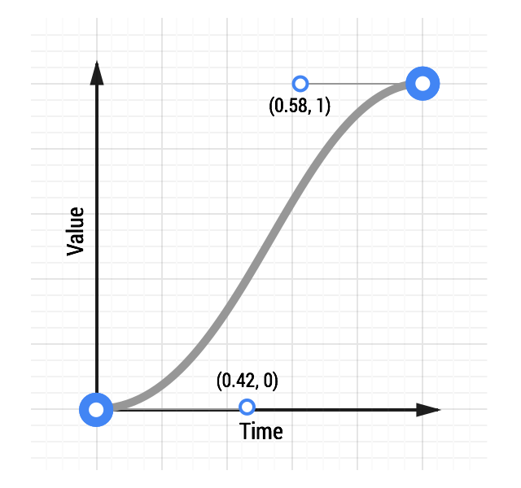

If you’re animating with CSS, you’ll find that you can define cubic bezier curves to define the timing. In fact, the keywords ease, ease-in, ease-out and linear map to predefined bezier curves, which are detailed in the CSS transitions specification.
In CSS these bezier curves take four values, or 2 pairs of numbers, with each pair describing the X and Y coordinates of a cubic bezier curve’s control points. The starting point of the bezier curve has a coordinate of (0, 0) and the end coordinate is (1, 1); you get to set the X and Y values of the two control points. The X values for the two control points must be between 0 and 1, and each control point’s Y value can exceed the [0, 1] limit, although the spec isn’t clear by how much!
Changing the X and Y value of each control point will give you vastly different curve, and therefore a vastly different feel to your animation. For example, if the first control point is in the lower right the animation will be slow to start. If it’s in the top left area it’s going to be fast to start. Conversely, if the second control point is in the bottom right of the grid it’s going to be fast at the end, whereas if it’s in the top left it will be slow to end.
For comparison, here are two curves: a typical ease-in-out curve and a custom curve:


See an animation with custom easing.
The CSS for the custom curve is:
transition: transform 500ms cubic-bezier(0.465, 0.183, 0.153, 0.946);
The first two numbers are the X and Y coordinates of the first control point, the second two numbers are the X and Y coordinates of the second control point.
Making a custom curve is a lot of fun, and it gives you significant control over the feel of the animation. For example, given the above curve, you can see the curve resembles a classic ease-in-out curve, but with a shortened ease-in, or ‘getting going’, portion, and an elongated slowdown at the end.
Experiment with this animation curve tool and see how the curve affects the feel of an animation.
Use JavaScript for more control
Sometimes you will need even more control than a cubic bezier curve can provide. Perhaps you want an elastic bounce feel, or you want to stop execution of the animation part way through, both of which are far more difficult to achieve with CSS. In such cases you should use JavaScript animation libraries. One of the best libraries is Greensock’s TweenMax (or TweenLite if you want to keep things super lightweight) as you get a lot of control from it in a small JavaScript library, and it’s a very mature codebase.
See an elastic ease animation.
To use something like TweenMax include the script in your page:
<script src="http://cdnjs.cloudflare.com/ajax/libs/gsap/latest/TweenMax.min.js"></script>
Once that’s in place you can call TweenMax against your element and tell it which properties you’d like, along with any easing you’d like. There are a ton of easing options that you can use; the code below uses an elastic ease-out:
var box = document.getElementById('my-box');
var animationDurationInSeconds = 1.5;
TweenMax.to(box, animationDurationInSeconds, {
x: '100%',
ease: 'Elastic.easeOut'
});
The TweenMax documentation highlights all the options you have here, so it’s well worth a read.